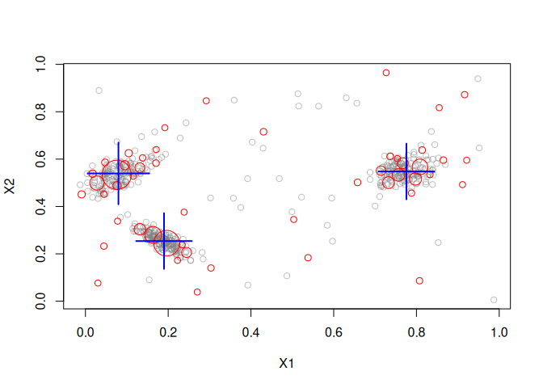

Maintainer: Michael Hahsler
Interface for data stream clustering algorithms implemented in the MOA (Massive Online Analysis) framework. This is an extension package for stream.
Installation
Stable CRAN version: Install from within R with
install.packages("streamMOA")Current development version: Install from r-universe.
install.packages("streamMOA",
repos = c("https://mhahsler.r-universe.dev",
"https://cloud.r-project.org/"))Example
Create 3 clusters with 5% noise.
library(streamMOA)
stream <- DSD_Gaussians(k = 3, d = 2, noise = 0.05)Cluster with CluStream.
clustream <- DSC_CluStream(m = 50, k = 3)
update(clustream, stream, 500)
clustream## CluStream
## Class: moa/clusterers/clustream/WithKmeans, DSC_MOA, DSC_Micro, DSC
## Number of micro-clusters: 50
## Number of macro-clusters: 3Plot micro-clusters.
plot(clustream, stream)